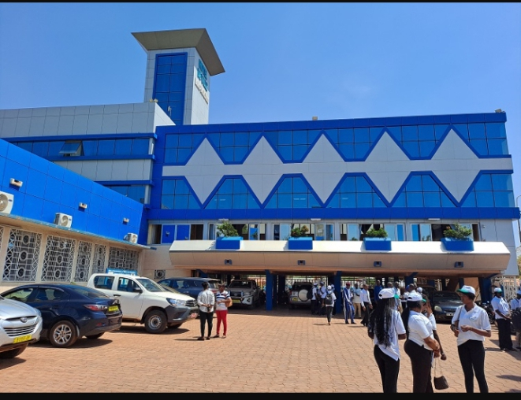

Quelques images de la Mairie Centrale de Bobo Dioulasso


La decription et l'historique de la Mairie Centrale de Bobo Dioulasso
La Mairie Centrale de Bobo Dioulasso a traversé une histoire de destruction , de reconstruction et de modernisation symbolissant l'attachement de la ville à son administration locale et à son développement.